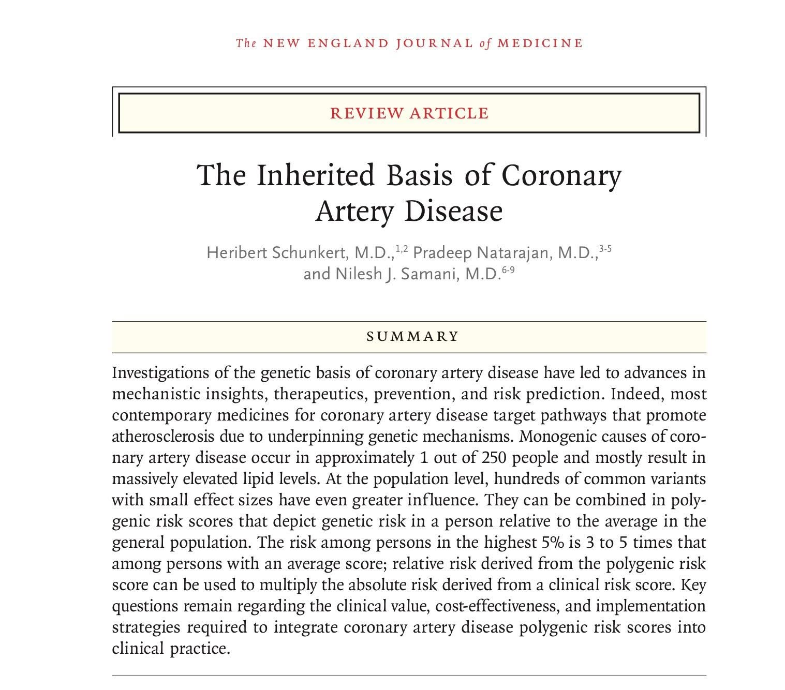
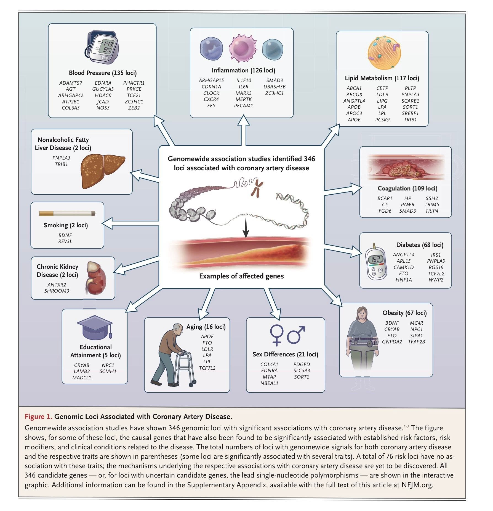
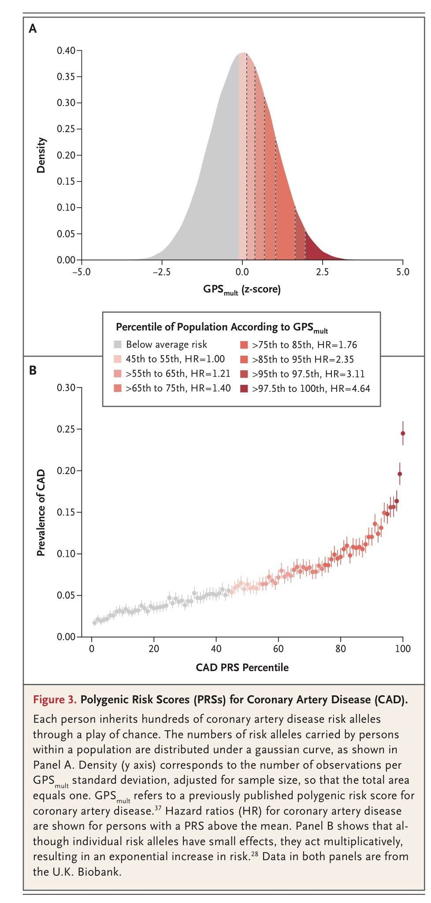
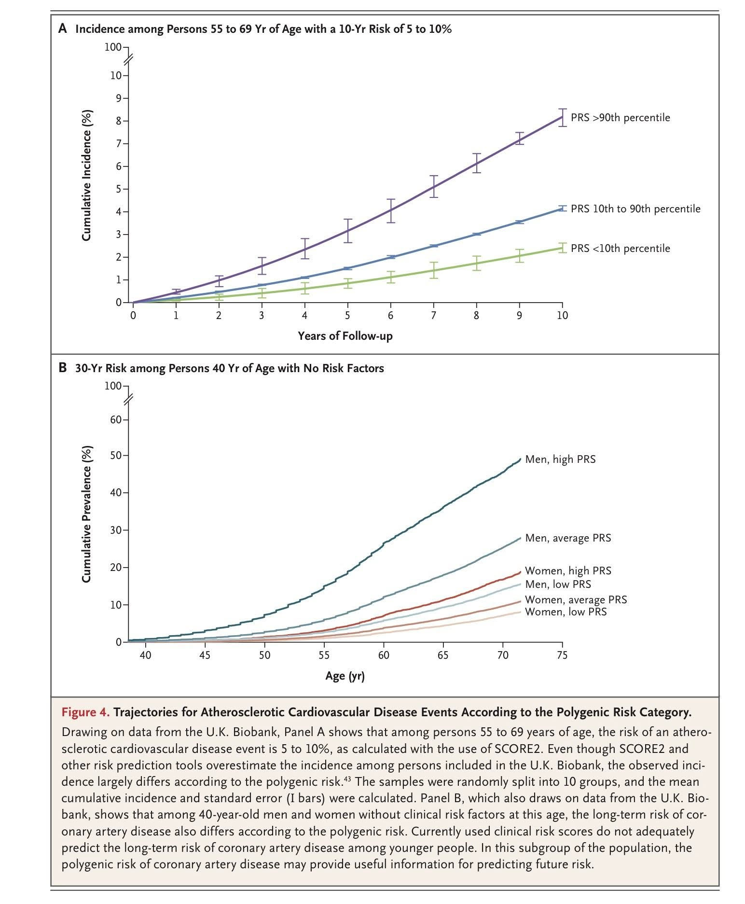

Latest review article in the NEJM:
Targets for LDL should scale with level of risk. Not everyone needs very low LDL. Focus should be on lifestyle modification, and not just drugs, especially for those at lower risk.
Link to full paper:
Paper · N Engl J Med · 2026The Inherited Basis of Coronary Artery Disease.Investigations of the genetic basis of coronary artery disease have led to advances in mechanistic insights, therapeutics, prevention, and risk prediction. Indeed, most contemporary medicines for coronary artery disease target pathways that promote atherosclerosis due to underpinning genetic mechanisms. Monogenic causes of coronary artery disease occur in approximately 1 out of 250 people and mostly result in…nejm.org
Quoted:
“The clinical message [regarding LDL] is proportionality, not “lower for everyone".
The goal is not to treat numbers in isolation, but to:
- focus on absolute cardiovascular risk
- identify who benefits meaningfully from drug therapy
- avoid unnecessary pharmacological treatment in truly low-risk individuals, while focusing on tailored lifestyle modification that promotes holistical optimal health and wellbeing
Bottom line-
LDL and apoB clearly matter - but they matter in context.”
Cholesterol, genetics, and cardiovascular risk: a needed reset
There is ongoing debate about LDL cholesterol, ever-lower targets, and the risk of over-medicalizing healthy people.
This discussion matters, because atherosclerotic cardiovascular disease will affect approximately 1 in 2 men and 1 in 3 women over their lifetime.
A recent New England Journal of Medicine (2026) review helps put this debate on solid scientific ground.
Key takeaways:
🔹 LDL (and apoB) are not just markers — they are causal risk factors
This is supported consistently by human genetics, Mendelian randomization, and randomized clinical trials. When LDL/apoB is lowered through different biological pathways, cardiovascular events are reduced accordingly.
🔹 Genetic risk is not one single entity
- Monogenic conditions (e.g., familial hypercholesterolemia) cause lifelong LDL elevation and very high cumulative risk → early and intensive treatment is justified.
- Polygenic risk (common in the population) reflects the combined effect of hundreds of variants and helps explain why some individuals develop coronary disease earlier than others.
🔹 Genetic risk is modifiable
High genetic risk is not destiny. Healthy lifestyle and lipid-lowering therapies reduce risk — and often produce greater absolute benefit in genetically high-risk individuals.
🔹 The clinical message is proportionality, not “lower for everyone”
The goal is not to treat numbers in isolation, but to:
- focus on absolute cardiovascular risk
- identify who benefits meaningfully from drug therapy
- avoid unnecessary pharmacological treatment in truly low-risk individuals, while focusing on tailored lifestyle modification that promotes holistical optimal health and wellbeing
Bottom line:
LDL and apoB clearly matter — but they matter in context.
✅ High risk (FH, atherosclerosis, high genetic risk): treat early, treat hard.
⚠️ Low risk: lifestyle first, talk absolute benefit, avoid unnecessary meds.
❌ Worst option: pretend LDL doesn’t matter and call it “critical thinking.”
Good prevention is not ideological; it is risk-based, individualized, and evidence-driven.
Stop treating lab values like moral scores. Treat risk—and be honest about absolute benefit.
That’s evidence-based prevention.
#Cardiology #Prevention #Cholesterol #LDL #ApoB #Genetics #EvidenceBasedMedicine #CardiovascularRisk




